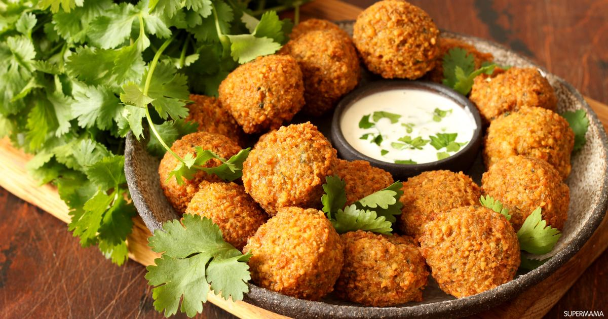

Food in Egypt
restaurantThese are some of my favourite Egyption foods
restaurant_menuKushari
Carb overload coming right at you! Come lunch time in Cairo you'll see a stack of locals lined up at every kushari shop around, waiting for a hearty portion of one of Egypt's favourite street foods. This filling meal is made up of rice, macaroni and lentils, topped with tomato sauce, garlic vinegar and garnished with chickpeas. and fried onions. Its a perfect meal that is substantial, nutrient-packed and cheap. Exactly what the Egyptians were after!

Ful we Ta3meya
Tallneya and ful mudammas, which are essentially fava beans and falafel are the original Egyptian fast-foods. Theyre a staple of the Egyptian diet, mainly because theyle filling and use ingredients that are easily accessible in the country. The ful is made of fava beans that are cooked for hours in a pot called a gedra. The ta-meya, which is an Egyptian falafel, is made out of crushed fava beans that is later made into a paste, then fried. Nowadays you can find falafels all over the Middle East however, Egypt is the actual origin of those delightful fried treats. A perfect dish for all you vegos!
